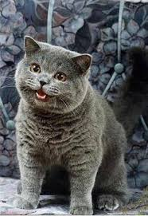

Welcome to the Trashzone!

-An example of what to expect-
This
website is
mine
. There are many like it, but
this one
is
mine
.
This is a second paragraph.
List Test
Item A
Item B
Item C
Links
Page 1
Page 2
Wikipedia
(opens in a new tab)